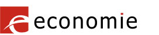

FOD Economie, KMO, Middenstand en Energie
Vertrouwenslijst van de certificatiedienstverleners die gekwalificeerde certificaten afgeven aan het publiek die in België vastgesteld zijn.
Trusted list of certification service providers issuing qualified certificates to the public who are established in Belgium.
Liste de confiance des prestataires de services de certification délivrant au public des certificats qualifiés établis en Belgique.
Vertrauenswürdigen Liste der Zertifizierungsdiensteanbieter, die qualifizierte Zertifikate ausstellen, die Öffentlichkeit, die ihren Sitz in Belgien.
The present list is the TSL implementation of Belgium "Trusted List of supervised/accredited Certification Service Providers” providing information about the supervision/accreditation status of certification services from Certification Service Providers (CSPs) who are supervised/accredited by Belgium for compliance with the relevant provisions of Directive 1999/93/EC of the European Parliament and of the Council of 13 December 1999 on a Community framework for electronic signatures.
The Trusted List aims at:
The Trusted List of a Member State provides a minimum of information on supervised/accredited CSPs issuing Qualified Certificates in accordance with the provisions laid down in Directive 1999/93/EC (Art. 3.3, 3.2 and Art. 7.1(a)), including information on the QC supporting the electronic signature and whether the signature is or not created by a Secure Signature Creation Device.
The CSPs issuing Qualified Certificates (QCs) listed here are supervised by Belgium and may also be accredited for compliance with the provisions laid down in Directive 1999/93/EC, including with the requirements of Annex I (requirements for QCs), and those of Annex II (requirements for CSPs issuing QCs). The applicable ‘supervision’ system (respectively ‘voluntary accreditation’ system) is defined and must meet the relevant requirements of Directive 1999/93/EC, in particular those laid down in Art. 3.3, Art. 8.1, Art. 11 (respectively, Art.2.13, Art. 3.2, Art 7.1(a), Art. 8.1, Art. 11)
Additional information on other supervised/accredited CSPs not issuing QCs but providing services related to electronic signatures (e.g. CSP providing Time Stamping Services and issuing Time Stamp Tokens, CSP issuing non-Qualified certificates, etc.) are included in the Trusted List and the present TSL implementation at a national level on a voluntary basis.